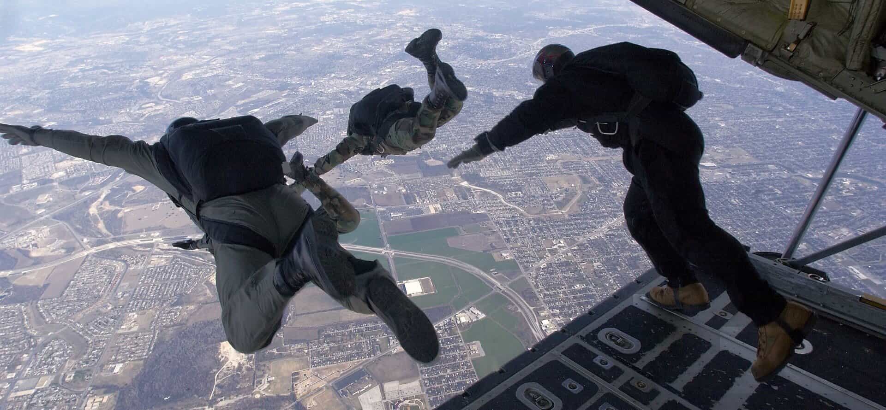

Sponsarships
Dear partner,
McGill BioDesign is an innovation-based design team centered on the field of Bioengineering. The goal of McGill
BioDesign is to create prototypes and products, in order to fulfill unmet healthcare needs through novel biotechnology.
Additionally, our team establishes a peer-based platform for undergraduate students to gain research and laboratory
experience. Our overall purpose is to serve the field of healthcare through useful contributions to the biotechnology
community, while developing and perfecting the research skills of the Bioengineers of tomorrow.
Our team contains a broad range of students with varying areas of expertise and interest. In an effort to accomplish our
goals, we are currently working on three projects. The established projects include: the optimization of a Diabetic
Glucose Sensor Transmitter (DGST), the development of a Baculovirus Gene-Delivery Film (BGDF), and advancement of
ActivAID, our advanced wound dressing. The DGST-based project aims to develop a transmitter capable of transforming
short-wave radio frequency into wireless or cellular signal to be used by diabetic children attending Camp Carowanis.
Secondly, the objective of the BGDF project is to develop a film capable of promoting chronic wound healing, through a
novel technique that involves transient growth factor expression delivered via baculovirus vectors. This film or
ointment would carry nano-encapsulated viruses capable of surviving in mammalian tissue, that will carry genes with the
necessary promoters to express healing factors, such as VEGF-A and PDGF-B, locally and transiently. Our longest running
project is the development of ActivAID, an advanced wound dressing. ActivAID is a proposed wound dressing, mainly
comprised of alginate gel and bioactive glass, that has antibacterial properties, wound cleaning action, and scar
prevention capabilities. ActivAID theoretically accelerates the wound healing process. With ActivAID, our team travelled
to New York and participated in an international competition featuring teams from over 30 schools. Our projects use
cutting-edge biotechnology to solve medically problems, while developing the skills of our participants.
In order to make the above a reality, we are looking for sponsors. We would love it if your company could sponsor our
design team so we are able to achieve our goals. Aside from displaying your company logo and officially mentioning you
in all relevant documentation and social media, we would also be thrilled to offer additional benefits detailed below.
Your involvement will be greatly appreciated!
McGill BioDesign
Become a sponsar with McGill Biodesign
